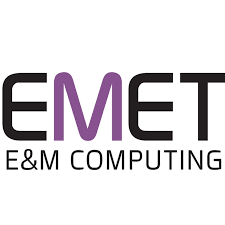
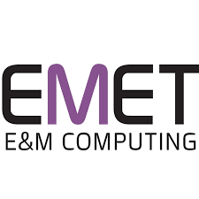
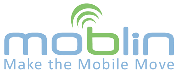
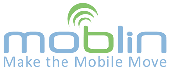

 



הייפראקטיב הוקמה ב- 2004 על ידי צוות בראשות טל שחור, יזם היי-טק ותיק.
צוות ההדרכה בחברה הינו מהוותיקים והמנוסים בישראל. חלקנו הקמנו בעבר בתי ספר להיי-טק אחרים, חלקנו עבדנו בתפקידי ניהול, שיווק והדרכה בבתי ספר אחרים.
לאורך השנים הכשרנו אלפי עובדים לענף ההי-טק בכל התמחות ומיומנות אפשרית.
לאורך השנים היינו תמיד חדשניים - היינו הראשונים ללמד באופן מקצועי טכנולוגיות חדשות.
בית הספר היחיד שפיתח מערכות יעודיות ואימץ באופן מלא שיטות הדרכה מתקדמות מרחוק - שנים לפני שמישהו שמע על נגיף הקורונה.
בשנות הפעילות הראשונות שלנו , העברנו קורסי הכשרה במודל המקובל בשוק - קורסים במגוון תחומים גדול המקבילים לקיים בשוק ובתשלום מראש.
לאחר מכן הקמנו את מיזם ״תלפיות היי-טק״ תלפיות היי-טק מתמקד בהכשרה ארוכה ומעמיקה מאוד של אנשי פיתוח,במגוון גדול של טכנולוגיות ובמודל בו התלמידים לא משלמים כלל שכר לימוד ומתחייבים לעבוד אצלנו מספר שנים.
כעת, לאור התקופה הקשה העוברת על המשק הישראלי י, כאשר מאות אלפי מובטלים מחפשים כיוון מקצועי ונושאים עיניהם אל תעשיית ההיי-טק, החלטנו להטות כתף, להיות החלוצים ולהפוך לבית הספר היחיד, שמציע מסגרות הכשרה חסרות סיכון במודל ״לא עבדת לא שילמת״.
הייפראקטיב הינה ״מכללת בוטיק״ - אנחנו סלקטיביים מאוד ומטפלים בכמות מצומצמת של מועמדים שמשכנעים אותנו שיש להם את מה שנדרש כדי לפתח קריירה משגשגת בענף ההי-טק.
אנו מלווים באופן צמוד את הבוגרים גם לאחר שהתקבלו לעבודה לאורך הקריירה שלהם - בעצות טובות, הפעלת קשרים כשנדרש ושרותי סוכן אישי צמוד - אנו רואים בבוגרינו משאב רב ערך לתעשית ההיי-טק והמשק הישראלי והם מקבלים את מלוא התמיכה לה הם ראויים בהתאם.